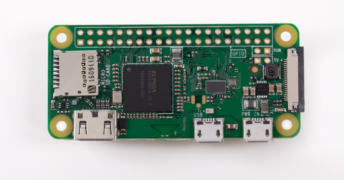

POSTS
Easy headless setup for Raspberry Pi Zero W on OSX

You’ve got your hands on a Rasberry Pi Zero W! Lucky you. This is a great device for IoT, monitoring, you name it. I’m building a connected wake up light.
I will explain how to set up the Raspberry Pi Zero W in headless mode, so without using a screen or keyboard. This will likely also work for any other wifi-equipped Raspberry. You will only need to power the board. Let me know what worked for you!
It turns out that setting up the Pi with wifi is not so difficult. You’ll need to do two things, enable SSH, and set the password for your wifi access point.
First off, download the latest version of raspbian from the site. This will work with both the regular and the lite version. Unzip the image file so you will have a file called something like 2017-03-02-raspbian-jessie-lite.img.
Enabling SSH
There are two partitions in the image file. One is /boot and the other is /. You’ll have to create an empty file called ssh on the /boot partition.
Configuring wifi
In the root partition /, there is a file called /etc/wpa_supplicant/wpa_supplicant.conf. Add this bit of text to the end of the file:
network={
ssid="<your wifi network name>"
psk="<your wifi password>"
}
Save, exit, and write the image to your SD card.
OSX, though
I have a Mac, and on OSX you can’t mount partitions that are formatted in ext4 without external drivers. How do we write these files? We could start a virtual machine, possibly using Vagrant, but that seems like overkill for such a simple operation. Docker to the rescue!
I’ve created a simple script that mounts both partitions, asks for your password, and writes the necessary files.
The code is available in this GitHub repository.
An automated build for this Docker image is on the hub under remmelt/docker-rpi-wifi-pw-setter.
Usage:
docker run --rm --privileged --tty --interactive \
--volume "/full/path/to/unzipped/image.img:/images/image.img" \
remmelt/docker-rpi-wifi-pw-setter
Just replace the /full/path/to/unzipped/image.img with the path to the downloaded and unzipped image, and you are good to go.
You can also use the included run.sh script.
Have fun and let me know how it went!